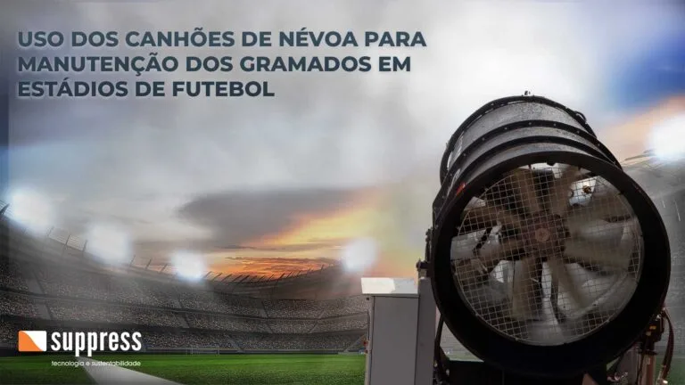

Uso dos Canhões de Névoa na Manutenção de Gramados em Estádios de Futebol
Climatização eficiente, sem desperdício de água e sem favorecer a proliferação de fungos no gramado.

Gramados de estádios de futebol exigem cuidados especializados para manter qualidade visual e capacidade de recuperação ao longo da temporada. Criar condições ideais de cultivo quando o clima não colabora é um desafio constante para as equipes de manutenção, que precisam equilibrar umidade da superfície, controle de temperatura, exposição ao vento e prevenção de fungos. Diferente de um jardim comum, um gramado profissional precisa suportar o desgaste de partidas, treinos e eventos sem perder uniformidade de corte, densidade e resistência ao impacto, o que torna o manejo climático uma tarefa técnica, não apenas estética.
Por que gramados esportivos de alta exigência têm necessidades especiais
Estádios profissionais e centros de treinamento operam sob uma pressão que um campo comum não enfrenta: uso intensivo, cronograma apertado de jogos e eventos, e a necessidade de manter a superfície em padrão televisivo e competitivo praticamente o ano todo. Isso significa que qualquer estresse térmico ou hídrico no gramado tem efeito direto na qualidade do jogo, na segurança dos atletas e na imagem da arena.
Em períodos de calor intenso, a superfície do gramado pode atingir temperaturas bem acima da temperatura do ar, acelerando a perda de água da planta e comprometendo a recuperação das raízes entre uma partida e outra. As equipes de manejo esportivo de alto rendimento, por isso, buscam ferramentas que resfriem a superfície sem comprometer a saúde fitossanitária da grama, e é nesse ponto que entra a diferença entre irrigação tradicional e climatização por névoa fina.
O problema dos métodos tradicionais de irrigação
Em climas quentes e secos, sistemas de irrigação convencionais por aspersão são amplamente utilizados para manter o gramado saudável. O problema é que a aspersão tradicional deposita um volume relativamente grande de água em cada ciclo, encharcando o substrato e mantendo a lâmina foliar molhada por períodos prolongados. No calor, o excesso de umidade combinado à temperatura elevada da superfície cria justamente o ambiente que favorece a proliferação de fungos, exigindo sistemas de drenagem eficientes, e nem sempre baratos, para evitar esse problema.
O desafio dos agrônomos responsáveis pela manutenção é justamente esse: resfriar a superfície do gramado sem elevar a umidade relativa a níveis que estimulem o crescimento fúngico nem encharcar o solo a ponto de prejudicar a aeração das raízes. Resolver esse equilíbrio só com aspersores convencionais é difícil, porque o princípio físico da aspersão, gotas maiores, volume concentrado, não foi pensado para resfriamento, e sim para reposição de água no solo.
A física da névoa fina aplicada ao gramado
Os canhões de névoa Suppress operam sob um princípio diferente do da irrigação convencional. O equipamento fragmenta a água em gotículas extremamente pequenas, que entram em contato com o ar e evaporam rapidamente, retirando calor latente do ambiente e da própria folha, o mesmo princípio físico do resfriamento evaporativo. Como a granulometria da gotícula é muito menor do que a de um aspersor comum, a quantidade de água efetivamente depositada sobre a superfície é mínima: o objetivo não é molhar o solo, é resfriar o ar e a lâmina foliar pelo efeito da evaporação.
Essa diferença de princípio físico é o que permite climatizar a superfície do gramado sem o volume de água que caracteriza a irrigação tradicional, uma comparação detalhada entre os dois métodos, incluindo alcance e padrão de cobertura, está disponível no artigo sobre canhão de névoa x aspersores.
Redução do risco de fungos e doenças foliares
Doenças foliares em gramados esportivos costumam estar associadas a um fator recorrente: água parada ou umidade prolongada sobre a folha, especialmente combinada a calor e baixa circulação de ar. A irrigação convencional, por depositar volumes maiores de água de uma só vez, tende a manter a folha molhada por mais tempo após cada ciclo, criando uma janela favorável à proliferação de fungos.
A névoa fina dos canhões Suppress trabalha de forma diferente: como a gotícula é pequena e o ciclo de aplicação pode ser curto, a evaporação ocorre rapidamente, reduzindo o tempo em que a lâmina foliar permanece úmida. Com ciclos programados e bem dimensionados, é possível obter o efeito de resfriamento desejado sem prolongar a exposição da folha à umidade, minimizando, na prática, um dos principais fatores de risco para doenças fúngicas em gramados de alta exigência.
Conforto térmico para atletas e torcida
Além do cuidado com o gramado em si, os canhões de névoa também cumprem um papel relevante no conforto térmico de quem está no estádio. Em jogos disputados em horários de calor extremo, a sensação térmica no entorno do campo e nas arquibancadas pode ser bastante elevada, afetando o desempenho dos atletas e a experiência do público. A névoa aplicada estrategicamente no perímetro do campo ou em áreas de circulação reduz a temperatura percebida sem gerar desconforto por excesso de água, uma aplicação que se aproxima da usada em outros tipos de evento, como detalhado no artigo sobre canhão de névoa para eventos.
Aplicações complementares no manejo do gramado
Distribuição de defensivos e fertilizantes foliares
Por gerar uma névoa fina e uniforme, o equipamento também pode ser utilizado para apoiar a distribuição de fertilizantes foliares e defensivos agrícolas sobre grandes áreas de gramado, contribuindo para uma cobertura mais homogênea do que métodos pontuais de aplicação.
Operação programável e automatizada
Canhões de névoa modernos podem ser operados de forma remota e programada, permitindo configurar ciclos de climatização em horários específicos, antes de um treino, durante a preparação do campo ou em janelas de calor mais intenso ao longo do dia. Essa automação reduz a dependência de operação manual constante e facilita a integração da climatização à rotina das equipes de manutenção esportiva, sem necessidade de presença contínua de um operador junto ao equipamento.
Uso racional de água como vantagem de sustentabilidade
Clubes e operadores de arenas esportivas estão cada vez mais atentos a critérios ambientais, sociais e de governança (ESG) em suas operações. Como o princípio da névoa fina é resfriar pela evaporação, e não saturar o solo com água, o consumo tende a ser mais racional quando comparado a ciclos longos de irrigação por aspersão voltados exclusivamente para climatização, o que se alinha a uma gestão mais consciente do recurso hídrico em operações esportivas, sem abrir mão da qualidade do gramado.
Instalação e posicionamento no entorno do campo
A instalação dos canhões de névoa em um estádio precisa considerar o perímetro do campo, a posição de torres ou estruturas de suporte e o alcance do jato de névoa, de forma que a climatização atinja a área desejada sem interferir na visão do público, na transmissão do jogo ou na dinâmica da partida. O alcance e o padrão de dispersão da névoa variam conforme o modelo e a regulagem do equipamento, detalhes que são explicados em profundidade no artigo sobre alcance da névoa dos canhões Suppress. Para operações que demandam cobertura de áreas maiores, como complexos esportivos com múltiplos campos, também vale considerar soluções de canhões de névoa de alta vazão.
Modelos de porte médio, como o canhão de névoa SP-35, costumam ser adequados para esse tipo de aplicação, equilibrando alcance, vazão e flexibilidade de posicionamento sem exigir estruturas desproporcionais ao espaço disponível no entorno do gramado.
Conclusão
Mais do que uma solução para indústria e mineração, os canhões de névoa Suppress também encontram aplicação em ambientes esportivos, ajudando a manter gramados saudáveis com uso racional de água, reduzindo o risco de doenças foliares e contribuindo para o conforto térmico de atletas e torcida. Entre em contato para conhecer as opções disponíveis e receber uma explicação técnica detalhada sobre qual configuração se adequa melhor ao seu estádio ou centro de treinamento.
Perguntas Frequentes
Qual a diferença entre névoa fina e irrigação tradicional para climatizar um gramado de estádio?
A irrigação tradicional deposita um volume maior de água sobre o solo e a folha, priorizando a reposição hídrica da planta. A névoa fina dos canhões Suppress fragmenta a água em gotículas muito pequenas que evaporam rapidamente, resfriando o ambiente e a superfície pelo princípio do resfriamento evaporativo, com uso de água muito mais comedido.
O uso de névoa aumenta o risco de fungos no gramado?
Não é esse o efeito esperado. Como a gotícula da névoa é pequena e os ciclos de aplicação podem ser curtos, a lâmina foliar permanece úmida por menos tempo do que em ciclos de irrigação convencional, o que tende a reduzir, e não aumentar, as condições favoráveis à proliferação de fungos, quando a aplicação é bem dimensionada.
Os canhões de névoa podem ser usados durante as partidas?
Sim. Quando posicionados estrategicamente no perímetro do campo, os canhões de névoa podem operar durante os jogos para reduzir a sensação térmica de atletas e torcida, sem interferir na visibilidade do campo ou na dinâmica da partida, especialmente em jogos disputados em horários de calor mais intenso.
Precisa climatizar e manter o gramado do seu estádio?
Fale com nossos especialistas e conheça a solução ideal para sua arena ou centro de treinamento.
Solicitar Proposta